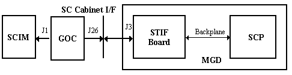

Proprietary to General Electric
Direction 5670000, Rev# 1
Optima MR450w 1.5T Service Methods
Module Version 1.0, Version Date 4/26/07
Proprietary to General Electric |
Diagnostics >> Peripherals >> Keyboard Data Paths
This diagnostic only tests the audio output capability by testing the SCIM communication path. It sends an audio command to the keyboard processor commanding it to make a high-pitched noise.
SCIM communication path
None
Illustration 1: SCIM to SCP Block Diagram

Before running this test, verify that the manual dial for volume control is set to its maximum setting.
Click [Run].
The keyboard will make a high-pitched beep that continues for two (2) seconds. This is not the quick sounds that occur when the keyboard is reset before each test. While running the test, listen closely to the keyboard speaker to make sure the two (2) second beep is heard.
If the keyboard audio output is faulty, this test will not fail.
The operator will have to ensure that the sound is actually heard.
None